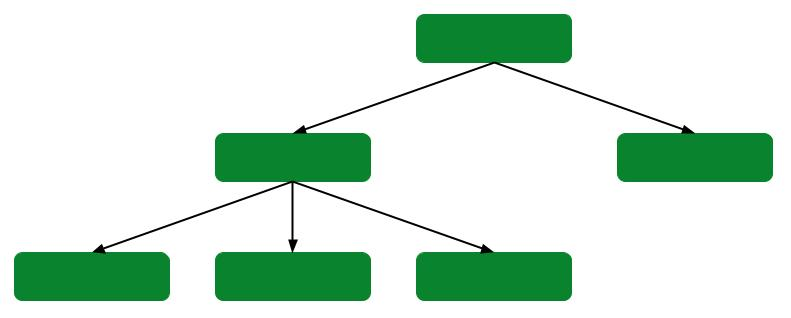
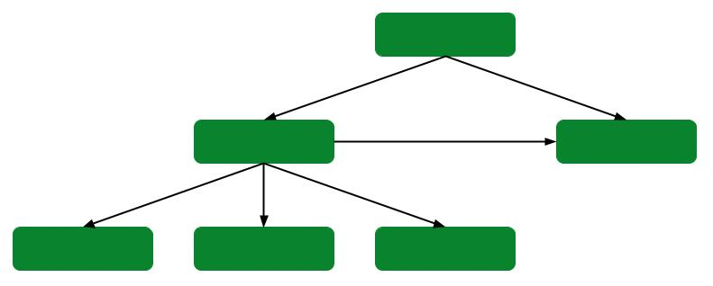

Introduction aux bases de données
En classe de première, nous avons vu les données structurées stockées dans les fichiers au format CSV et leur traitements. Cette technique bien que simple et pratique présente des limites :
- sécurité et confidentialité inexistantes;
- difficultés pour partager le fichier entre plusieurs utilisateurs en lecture et écriture;
- difficultés à lier plusieurs table CSV entre elles.
Avec l'apparition du web, des réseaux sociaux, des objets connectés [...] , la quantité de données à stocker, traiter et sécuriser n'a cessé de s'accroître et de jouer un rôle de plus en plus important dans un monde de plus en plus numérisé...
Il nous fallait alors un moyen de stocker toutes ces données de manière sécurisé tout en permettant le partage et la mise en relation de celles-ci.
Système de Gestion de Bases de Données
Dans une base de données, l'information est stockée dans des fichiers, mais à la différence de ceux au format *csv*, il n'est pas possible de travailler sur ces données avec un simple éditeur de texte.
Pour manipuler les données présentes dans une base de données (écrire, lire ou encore modifier), il est nécessaire d'utiliser un type de logiciel appelé "Système de Gestion de Base de Données" très souvent abrégé en SGBD.
Il existe une multitude de SGBD : des gratuites, des payantes, des libres ou bien encore des propriétaires. Par exemple, SQLite que nous allons utiliser, est un SGBD dont le code source est dans le domaine public.
Voici les différents services accomplis par les SGBD :
- Gestion de la lecture, l'écriture ou la modification des informationscontenues dans une base de données.
- Gestion des autorisations d'accès à une base de données. Il est en effet souvent nécessaire de contrôler les accès par exemple en permettant à l'utilisateur A de lire et d'écrire dans la base de données alors que l'utilisateur B aura uniquement la possibilité de lire les informations contenues dans cette même base de données.
- Gestion d'accès multiples et simultanés. Plusieurs personnes peuvent avoir besoin d'accéder aux informations contenues dans une base données en même temps. Cela peut parfois poser problème, notamment si les 2 personnes désirent modifier la même donnée au même moment (on parle d'accès concurrent).
- Maintenance des données. Les fichiers des bases de données sont stockés sur des disques durs dans des ordinateurs, ces ordinateurs peuvent subir des pannes. Il est souvent nécessaire que l'accès aux informations contenues dans une base de données soit maintenu, même en cas de panne matérielle. Les bases de données sont donc dupliquées sur plusieurs ordinateurs afin qu'en cas de panne d'un ordinateur A, un ordinateur B contenant une copie de la base de données présente dans A, puisse prendre le relais. Tout cela est très complexe à gérer, en effet toute modification de la base de données présente sur l'ordinateur A doit entraîner la même modification de la base de données présente sur l'ordinateur B. Cette synchronisation entre A et B doit se faire le plus rapidement possible, il est fondamental d'avoir des copies parfaitement identiques en permanence.
Modèles de SGBD
Il existe 5 modèles de SGBD :
- Le modèle hiérarchique : les données sont classées hiérarchiquement, selon une arborescence descendante (arbre). Ce modèle utilise des pointeurs entre les différents enregistrements. Il s'agit du premier modèle de SGBD.

- Le modèle réseau : ce modèle ressemble au modèle hiérarchique à ceci près qu'il n'est plus nécessairement descendant.

- Le modèle relationnel (SGBDR) : les données sont enregistrées dans des tableaux à deux dimensions (lignes et colonnes).
- Le modèle déductif : similaire au modèle relationnel , mais la manipulation des tables se fait différemment.
- Le modèle objet (SGBDO) : les données sont stockées sous forme de classes.
Bases de données relationnelles et non relationnelles
Une base de données contient un ensemble d'informations qui sont stockées, accessibles et gérées à d'aide d'un système de gestion de base de données (SGBD). Parmi les différents types de bases de données, il existe la base de données relationnelle, et la base de données non relationnelle.
Alors que la première stocke les données dans des tables, la deuxième les stocke au format clé-valeur, dans des documents, en colonne, en graphique ou autres.
Une base de données relationnelle relie les informations entre elles au sein des bases de données .La base de données relationnelle stocke les données dans des tables ,qui peuvent être accessibles et reconstruites de différentes manières et qui sont elles-mêmes composées de lignes et de colonnes. Le langage de requête structuré (SQL) permet d'interroger la donnée de façon interactive et ainsi de collecter les données dans le cadre de rapports.